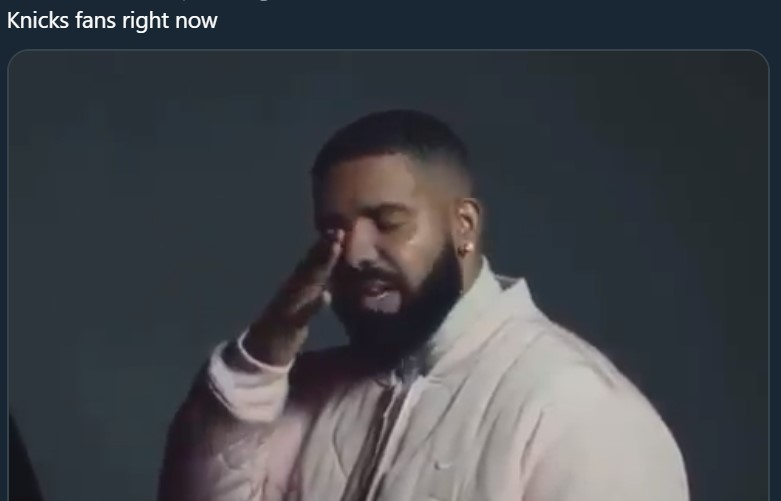
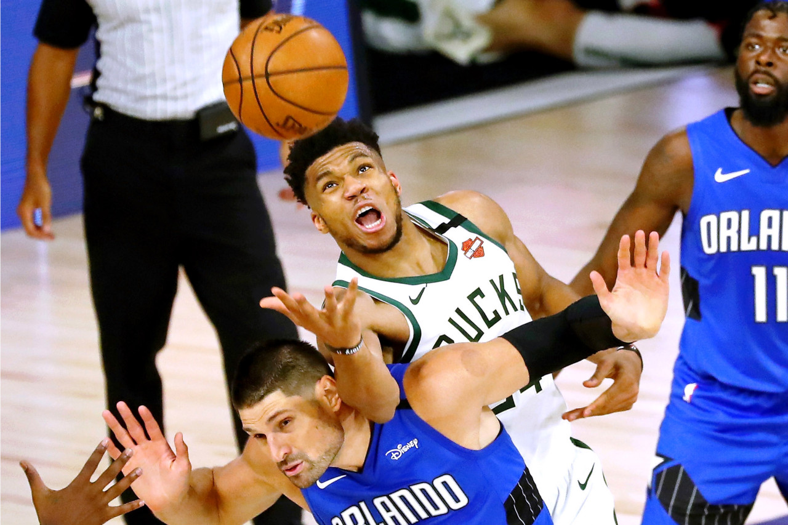
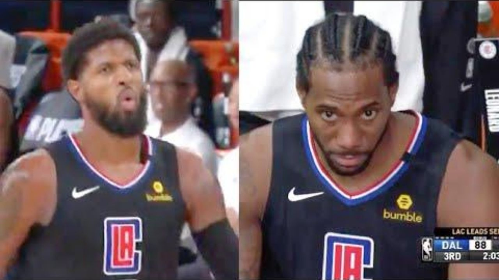

Knicks lose out on draft lottery once again, dropping from the projected 6th pick to the 8th pick in their ill-fated season. Pray for them.
Good news for Timberwolves fans, despite missing the playoffs withAndrew WigginsD'Angelo Russell it gave you a chance at the NBA Lottery. Guess what, you hold the FIRST PICKsubject to change
Here are some takes
The general belief all year had LaMelo Ball, Anthony Edwards and James Wiseman as top-three overall favorites, with Obi Toppin, Deni Avdija, Onyeka Okongwu and Isaac Okoro mixed into a tier that either slightly overlaps or follows. But based from some scouts' takes I've heard over the past few weeks, mock drafts could start looking silly right from the top. -Wasserman
After an embarassing first game, Giannis has put himself back together and mustered a win against the Magic. Final Score: 111-96 Bucks W
Doncic scores 70 in his first two playoff games which is the most for any playoff debut He surpasses Kareem Abdul Jabaar
Playoff P Chokes! Shoots 4/17
Here is the final box score.